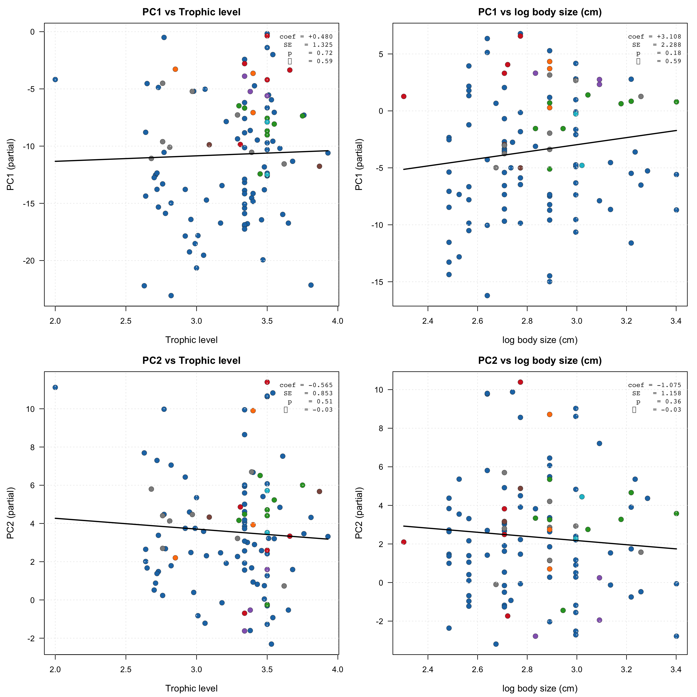

suppressPackageStartupMessages({
library(ape)
library(nlme)
library(phytools)
})
BUNDLE <- "../../bundle"
FIGDIR <- "../../figures"
dir.create(FIGDIR, showWarnings = FALSE, recursive = TRUE)PGLS — Color PCs vs Ecology
Phylogenetic GLS of PC1, PC2 against trophic level and body size, with Pagel’s λ
Tip
Advanced recipe. Asks: after controlling for phylogeny, do the leading color-pattern axes (PC1, PC2) covary with ecology (trophic level) and morphology (body size)? Fits two phylogenetic generalized least squares (PGLS) models with a Brownian + λ correlation structure (nlme::corPagel), then makes a 2×2 grid of partial-residual scatter plots (one per predictor per response).
Poster output. figures/pgls-color-traits-hero.pdf — 12” × 12” (2×2 grid), drops into Panel D of the 48”×36” template.
What you’re computing
For each color-pattern PC (PC1, PC2):
- Build a tip-aligned data frame with:
PC,trophic_level,body_size_cm. - Drop species missing either covariate.
- Fit
gls(PC ~ trophic_level + body_size_cm, correlation = corPagel(1, tree, fixed = FALSE), method = "ML"). - Extract the partial-residual y-values for each covariate (i.e., what’s left in the response after removing the effect of the other covariate, on the original data scale).
- Plot each partial-residual scatter with a fitted line + λ + p in the corner. No big stats table — annotations only.
Setup
Load inputs
pp <- readRDS(file.path(BUNDLE, "phylo_pca.rds"))
tree <- pp$tree
S <- pp$ppca$S
PC1 <- setNames(S[, 1], rownames(S))
PC2 <- setNames(S[, 2], rownames(S))
traits <- read.csv(file.path(BUNDLE, "chaet_traits.csv"),
stringsAsFactors = FALSE)
df <- data.frame(species = tree$tip.label,
PC1 = PC1[tree$tip.label],
PC2 = PC2[tree$tip.label])
df <- merge(df, traits[, c("species", "body_size_cm", "trophic_level",
"source")],
by = "species", all.x = TRUE)
df <- df[match(tree$tip.label, df$species), ]
stopifnot(all(df$species == tree$tip.label))
# Log-transform body size (length traits are right-skewed).
df$log_body <- log(df$body_size_cm)
# Drop rows missing covariates (PGLS requires complete cases).
keep <- complete.cases(df[, c("PC1", "PC2", "log_body", "trophic_level")])
df_use <- df[keep, ]
tree_use <- keep.tip(tree, df_use$species)
rownames(df_use) <- df_use$species
cat(sprintf("Species used in PGLS: %d (dropped %d for missing covariates)\n",
nrow(df_use), sum(!keep)))Species used in PGLS: 109 (dropped 0 for missing covariates)n_sim <- sum(grepl("simulated", df_use$source))
if (n_sim > 0) {
message(sprintf("NOTE: %d species in the PGLS sample have at least one SIMULATED trait value.", n_sim))
}NOTE: 17 species in the PGLS sample have at least one SIMULATED trait value.Fit the two PGLS models
fit_pgls <- function(response_col) {
f <- as.formula(sprintf("%s ~ trophic_level + log_body", response_col))
# Try several starting values for lambda; nlme + corPagel is fragile when
# the unconstrained optimum sits near the [0, 1] boundary.
starts <- c(0.5, 0.9, 0.1, 0.99, 0.0)
ctrl <- nlme::glsControl(opt = "optim", maxIter = 200, msMaxIter = 200,
tolerance = 1e-6, msTol = 1e-6)
for (lam0 in starts) {
m <- tryCatch(
nlme::gls(f, data = df_use,
correlation = ape::corPagel(lam0, tree_use,
form = ~species,
fixed = FALSE),
method = "ML",
control = ctrl),
error = function(e) NULL
)
if (!is.null(m)) {
attr(m, "fit_note") <- sprintf("converged from lambda start = %.2f", lam0)
return(m)
}
}
# Last resort: pure Brownian (lambda fixed at 1)
m <- nlme::gls(f, data = df_use,
correlation = ape::corPagel(1, tree_use,
form = ~species,
fixed = TRUE),
method = "ML",
control = ctrl)
attr(m, "fit_note") <- "Pagel optimizer failed; reverted to fixed lambda = 1 (Brownian)"
m
}
m_pc1 <- fit_pgls("PC1")
m_pc2 <- fit_pgls("PC2")
cat(sprintf("PC1 fit: %s\n", attr(m_pc1, "fit_note")))PC1 fit: converged from lambda start = 0.50cat(sprintf("PC2 fit: %s\n", attr(m_pc2, "fit_note")))PC2 fit: converged from lambda start = 0.50extract_stats <- function(m) {
s <- summary(m)
tt <- s$tTable
lam <- tryCatch(
as.numeric(coef(m$modelStruct$corStruct, unconstrained = FALSE)),
error = function(e) NA_real_
)
if (length(lam) == 0) lam <- 1.0 # fixed-lambda fit
list(
coef = tt[, "Value"],
se = tt[, "Std.Error"],
p = tt[, "p-value"],
lambda = lam
)
}
st1 <- extract_stats(m_pc1)
st2 <- extract_stats(m_pc2)
cat("PC1 ~ trophic + log_body:\n"); print(round(rbind(coef = st1$coef, se = st1$se, p = st1$p), 4)); cat(sprintf(" lambda = %.3f\n", st1$lambda))PC1 ~ trophic + log_body: (Intercept) trophic_level log_body
coef -10.5255 0.4802 3.1078
se 8.1673 1.3250 2.2878
p 0.2003 0.7178 0.1772 lambda = 0.586cat("\nPC2 ~ trophic + log_body:\n"); print(round(rbind(coef = st2$coef, se = st2$se, p = st2$p), 4)); cat(sprintf(" lambda = %.3f\n", st2$lambda))
PC2 ~ trophic + log_body: (Intercept) trophic_level log_body
coef 5.0029 -0.5646 -1.0749
se 4.0907 0.8527 1.1578
p 0.2240 0.5093 0.3553 lambda = -0.032Partial-residual computation
# Partial residuals: response minus the contribution of "other" predictors,
# plus the contribution of the focal predictor (so the fitted line passes
# through the cloud at the focal-predictor slope). On the original scale of
# the response.
pr_data <- function(m, focal, response_col) {
b <- coef(m)
fitted_other <- 0
for (term in setdiff(names(b), c("(Intercept)", focal))) {
fitted_other <- fitted_other + b[term] * df_use[[term]]
}
y_partial <- df_use[[response_col]] - fitted_other
data.frame(species = df_use$species,
x = df_use[[focal]],
y = y_partial)
}
pr_PC1_trophic <- pr_data(m_pc1, "trophic_level", "PC1")
pr_PC1_body <- pr_data(m_pc1, "log_body", "PC1")
pr_PC2_trophic <- pr_data(m_pc2, "trophic_level", "PC2")
pr_PC2_body <- pr_data(m_pc2, "log_body", "PC2")Plot helper — 2×2 partial-residual grid
Code
clade_color <- function(species_vec) {
genus <- sub("_.*$", "", species_vec)
# 11 reef-butterflyfish genera in this bundle; collapse rares to "Other".
big <- c("Chaetodon", "Prognathodes", "Heniochus", "Forcipiger",
"Hemitaurichthys", "Roa", "Chelmon")
g <- ifelse(genus %in% big, genus, "Other")
pal <- c(Chaetodon = "#1f77b4",
Prognathodes = "#d62728",
Heniochus = "#2ca02c",
Forcipiger = "#9467bd",
Hemitaurichthys = "#ff7f0e",
Roa = "#8c564b",
Chelmon = "#17becf",
Other = "grey55")
pal[g]
}
plot_panel <- function(pr, focal_label, response_label, m, focal_term,
xlab = focal_label) {
par(mar = c(4.4, 4.6, 2.4, 1.0), bg = "white")
cols <- clade_color(pr$species)
plot(pr$x, pr$y,
pch = 21, bg = cols, col = "grey20",
cex = 1.4, lwd = 0.4,
xlab = xlab,
ylab = sprintf("%s (partial)", response_label),
cex.lab = 1.15, cex.axis = 1.0, las = 1,
main = sprintf("%s vs %s", response_label, focal_label),
cex.main = 1.25, font.main = 2)
grid(col = "grey92")
# Fitted line: slope = PGLS coef on focal_term, intercept anchored to
# mean of partial residuals.
b <- coef(m)
slope <- b[focal_term]
x_seq <- seq(min(pr$x), max(pr$x), length.out = 50)
y_seq <- slope * (x_seq - mean(pr$x)) + mean(pr$y)
lines(x_seq, y_seq, col = "black", lwd = 2)
# Annotation in upper-right
s <- summary(m)
tt <- s$tTable
lam <- tryCatch(
as.numeric(coef(m$modelStruct$corStruct, unconstrained = FALSE)),
error = function(e) NA_real_
)
if (length(lam) == 0) lam <- 1.0 # fixed-lambda fit
txt <- c(
sprintf("coef = %+.3f", tt[focal_term, "Value"]),
sprintf("SE = %.3f", tt[focal_term, "Std.Error"]),
sprintf("p = %s", format.pval(tt[focal_term, "p-value"], digits = 2)),
sprintf("λ = %.2f", lam)
)
usr <- par("usr")
text(usr[2] - diff(usr[1:2]) * 0.02, usr[4] - diff(usr[3:4]) * 0.04,
paste(txt, collapse = "\n"),
adj = c(1, 1), cex = 0.85, family = "mono",
col = "grey15")
}Hero PDF (12” × 24”, matches Panel D)
hero_pdf <- file.path(FIGDIR, "pgls-color-traits-hero.pdf")
draw <- function() {
par(mfrow = c(2, 2), mar = c(4.5, 4.5, 2.5, 1.5), oma = c(0, 0, 0, 0))
plot_panel(pr_PC1_trophic, "Trophic level", "PC1", m_pc1, "trophic_level")
plot_panel(pr_PC1_body, "log body size (cm)", "PC1", m_pc1, "log_body")
plot_panel(pr_PC2_trophic, "Trophic level", "PC2", m_pc2, "trophic_level")
plot_panel(pr_PC2_body, "log body size (cm)", "PC2", m_pc2, "log_body")
}
pdf(hero_pdf, width = 12, height = 12)
draw()Warning in text.default(usr[2] - diff(usr[1:2]) * 0.02, usr[4] - diff(usr[3:4])
* : conversion failure on 'λ = 0.59' in 'mbcsToSbcs': for λ (U+03BB)
Warning in text.default(usr[2] - diff(usr[1:2]) * 0.02, usr[4] - diff(usr[3:4])
* : conversion failure on 'λ = 0.59' in 'mbcsToSbcs': for λ (U+03BB)Warning in text.default(usr[2] - diff(usr[1:2]) * 0.02, usr[4] - diff(usr[3:4])
* : conversion failure on 'λ = -0.03' in 'mbcsToSbcs': for λ (U+03BB)
Warning in text.default(usr[2] - diff(usr[1:2]) * 0.02, usr[4] - diff(usr[3:4])
* : conversion failure on 'λ = -0.03' in 'mbcsToSbcs': for λ (U+03BB)# Genus color legend at the very bottom
par(mar = c(0, 0, 0, 0))
plot.new()
legend("center", horiz = TRUE,
legend = c("Chaetodon", "Prognathodes", "Heniochus", "Forcipiger",
"Hemitaurichthys", "Roa", "Chelmon", "Other"),
pt.bg = c("#1f77b4", "#d62728", "#2ca02c", "#9467bd",
"#ff7f0e", "#8c564b", "#17becf", "grey55"),
col = "grey20", pch = 21, pt.cex = 1.6,
bty = "n", cex = 0.9)
dev.off()quartz_off_screen
2 cat(sprintf("Wrote: %s\n", normalizePath(hero_pdf)))Wrote: /Users/michaelalfaro/Dropbox/git/EEB187-ecology-evolution-color-2026/labs/project-recipes-instructor-chaetodontidae/figures/pgls-color-traits-hero.pdf# In-document
draw()
Interpretation
- PC1 (pattern density) — if
trophic_levelhas a significant positive coefficient, more-carnivorous species tend toward simpler patterns after accounting for body size and phylogeny. A negative coefficient flips the sign. The body-size coefficient tells you whether larger species converge on simple patterns (positive) or busy patterns (negative), again controlling for diet and phylogeny. - PC2 (color diversity) — the same logic, with the response now being chromatic richness.
- λ ≈ 1: trait residuals are strongly phylogenetically structured (Brownian). λ ≈ 0: residuals look independent across species; the ordinary GLS without correction would have given the same answer.
- Wide bands of colored points clustering together in any panel indicate one genus is doing most of the work — a flag to re-run the same model within that genus to check for Simpson’s paradox.
Diagnostics
cat("PC1 model:\n"); print(summary(m_pc1)$tTable); cat(sprintf(" lambda = %.3f\n", st1$lambda))PC1 model: Value Std.Error t-value p-value
(Intercept) -10.5254684 8.167289 -1.2887347 0.2002959
trophic_level 0.4802031 1.324973 0.3624247 0.7177563
log_body 3.1078365 2.287780 1.3584510 0.1772047 lambda = 0.586cat("\nPC2 model:\n"); print(summary(m_pc2)$tTable); cat(sprintf(" lambda = %.3f\n", st2$lambda))
PC2 model: Value Std.Error t-value p-value
(Intercept) 5.0028953 4.0906722 1.2230008 0.2240415
trophic_level -0.5645854 0.8526532 -0.6621513 0.5093113
log_body -1.0749250 1.1577680 -0.9284459 0.3552857 lambda = -0.032How to extend
- Add
depth_max_mas a third covariate (now available inchaet_traits.csv). - Replace
corPagelwithcorMartins(OU) to test whether a rubber-band model fits the data better — compare with AIC. - Run per-genus models with
subset = genus == "Chaetodon"to see whether the within-genus signal matches the family-level signal.
Output files for the poster
| File | What to use it for |
|---|---|
figures/pgls-color-traits-hero.pdf |
12”×24” portrait — Panel D of the 48”×36” template; 4 partial-residual scatters + compact stats annotation in each corner + genus color legend at the bottom |